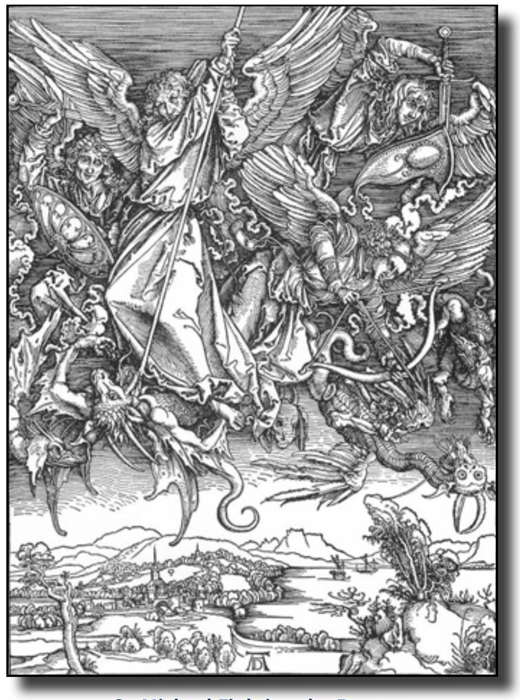

"I saw a new Heaven and a new Earth. And I saw a heavenly city, the New Jerusalem coming down out of heaven" The Revelation of John
"It is coming down to us. It is a new earthly vision. A pure gift "prepared as a bride beautifully dressed for her husband" Reverend Bob Haden
The Revelation of John
I, John, your brother and companion in the suffering, and in the kingdom and the patient endurance that are ours in Jesus Christ, was on the isle of Patmos, for the word of God and for testimony of Jesus Christ. I was in the spirit on the Lord's day, and heard behind me a great voice, as of a trumpet, saying, "I am Alpha and Omega, the first and the last, write on a scroll what you see and send it to the seven churches in Asia". Revelation 1:9-11
The Revelation of John is a classic in Christian Literature. It is much like Dante's Divine Comedy but it has long been a puzzle for many Christians. It must be studied, struggled with and approached on a symbolic level; only then does it begin to come to life for us all.
The Book of Revelation, like so much apocalyptic writing, was born out of innocent suffering. Jesus had been crucified. Rome was persecuting the Christians-literally throwing them to the lions, cutting their heads off, or crucifying them. It would be like living in Iraq today, where the Christian church is about to vanish because of the persecutions and beheadings. In both incidences the Christians were and are being specifically targeted. John, the author of Revelation, was at the crucifixion of Jesus but left Jerusalem and was living in Ephesus with Mary, the mother of Jesus. John, himself, was tortured by immersion in a boiling pot of oil and then banished to the Isle of Patmos in the Aegean Sea. It was on the Isle of Patmos that John had his dream-like vision.
As with all dreams and visions, there are multiple layers of meaning in the Apocalypse of John. Some see John's Revelation as speaking about events at the time, e.g., Nero persecuting the Christians. Others see it as foretelling future wars and catastrophes and the end of the world. Still others see it as describing a process, a process that is relevant to all times and all places and all people. Carl Jung calls it the process of individuation, the process of becoming what we are called to be. So, let us explore The Book of Revelation as a process of individuation.
Three Wars
There are three wars going on in the Book of Revelation: the war in heaven, the war on earth, and the war that's going on inside all of us. The Book of Revelation speaks of all three. In essence, the wars are between good and evil. We're fighting and struggling all the time with good and evil within ourselves. This world in which we live struggles with good and evil and there's even a struggle between good and evil in the heavenly sphere, in the spiritual realm.
The Beast
The Book of Revelation is about the conflict between two kinds of power: the power of the beast and the power of the lamb. The power of the beast is the power to control and manipulate. We all use that kind of power from time to time - in our home, in our work, in the world.
The power of the lamb is the power of Christ. It is the power to heal and to set free. When we use the power of the lamb, our power sets people free and causes healing to happen.
There are three beasts: the dragon in heaven, the beast from the sea, and the beast from the earth. Together they form a demonic trinity. You'll find with all these dragons and beasts, that they are similar to the divine... but not quite. Evil likes to take on the image of the divine to sneak around and fool people in many ways. The Four Horsemen of the Apocalypse illustrates this, and takes one deeper into the individuation process.
Four Horsemen of the Apocalypse
One of my favorite parts of John's vision is the Four Horsemen of the Apocalypse. There are four horses: one of them is white, one is red, one is black and one of them is pale.
The rider on the white horse has a bow and is wearing a crown. The rider on the red horse has a sword and produces much bloodshed. The rider on the black horse has the scales, the scales of economic systems which have gone awry. And finally, there is the pale horse, the horse that is ridden by and is the power of death.
The white horse is almost a personification of Christ, but not quite. It's the way things always start out. These horses represent the whole system of how evil happens in our world. It starts out looking very, very good, like that white horse. Evil often wears the mask of divinity. Frequently, you and I enter conflicts for various righteous reasons: to oppose oppression or evil; to defeat tyranny or to end war; to help the environment or to save the human race. All kinds of good causes.
We begin these causes on the white horse... but, pretty soon, the red horse comes along. The red horse is the blood horse. Even good and righteous causes and wars, can and do bring about bloodshed and destruction.
Then, there's the black horse whose rider is holding the scales, a symbol of the economy gone awry. When the economy goes awry, famine, starvation, and economic enslavement ensue. This cycle repeats itself again and again throughout history.
Finally, there is the pale horse, whose rider is Death, the final resting place of evil. Death-the ultimate power to control.
In the beginning, evil often seems enticing, attractive, and desirable. No one knowingly wants to get caught in the clutches of the beast of evil. We are seduced into mounting that old horse.
The Lamb
The power of the Lamb is not that of manipulation and control, but rather of healing and setting free. In the fifth chapter of Revelation, we see the Lamb sitting on a throne surrounded by four living creatures. At the bottom left is a man. At the top left is a lion. At the top right is a calf. At the bottom right is an eagle. The early church designated these as Matthew, Mark, Luke, and John: the four gospels. So, traditionally, the man with six wings symbolizes Matthew; the lion symbolizes Mark; the calf, Luke; and the eagle, John. Surrounding those symbols on both sides are the twenty-four elders. In the middle, the great multitude from every nation and every race on earth praises the Lamb. This picture is a mandala, a symbol for wholeness in all cultures.
We also notice that the Lamb is the sacrificial Lamb, as there is blood pouring out of the Lamb. One of the elders is catching the blood in a chalice, symbolic of our taking the Eucharist, the body and the blood of the Lamb. The Lamb is certainly symbolic of Jesus, who died on the Cross.
The symbol of the sacrificial Lamb carries us all the way back to Exodus when the lamb was sacrificed and the blood put over doors in X's, so the last plague would skip over those doors and not kill the oldest son. The Passover also represents the transition of the Israelites from slavery in Egypt to freedom in the Promised Land. This is another symbol of the freedom that the Lamb brings.
Both the Beast and the Lamb in the Book of Revelation have horns, signifying power and dominion. The Beast wears a crown on its horns, flouting its dominion. The Lamb's seven eyes never close, keeping a constant watch for injustice and oppression.

The Beast in the Book of Revelation represents pseudosuffering. The Beast does, indeed, bear a wound, but it is the kind of wound meant to be seen, meant to attract the attention of others. On the other hand, the suffering of the Lamb is genuine and purposeful.
The power that is based on deceit will lose in the confrontation with the truth. We see it happen again and again. It may take years, or decades, but a power based on deceit will eventually crumble.
Inside the scroll is God's plan for salvation. The Lamb is the only one who can open the scroll. That is, Jesus is the key to understanding God's new way. Jesus illustrated this new way at the meal when he, the Master, washed the disciples' feet then asked them to wash one another's feet.
The power of the Lamb is service to others, true leadership, not manipulative power moves.
The Power of the Beast manipulates and controls. The power of the Lamb heals and liberates.
The New Jerusalem
The New Jerusalem is the result of Lamb-Power put into action.
Chapters 21 and 22 of the Book of Revelation are a dream vision of the New Jerusalem. It is analogous to Jesus' dream of the Kingdom of God.
Jesus says many things about the Kingdom of God. It is the Kingdom of love, the Good Samaritan kind of love that stops, listens, and heals. Jesus' dream of the Kingdom and John's dream of the New Jerusalem are the same.
In 1963, Martin Luther King gave a speech in Washington, DC, of his dream-his own New Jerusalem.
I say to you today, my friends, that in spite of the difficulties and frustrations of the moment, I still have a dream. It is a dream deeply rooted in the American dream. I have a dream that one day this nation will rise up and live out the true meaning of its creed: 'We hold these truths to be self-evident that all men are created equal.' I have a dream that one day on the red hills of Georgia, the sons of former slaves and the sons of former slave owners will be able to sit down together at the table of brotherhood.
I have a dream that one day even the state of Mississippi, a desert state sweltering with the heat of injustice and oppression, will be transformed into an oasis of freedom and justice. I have a dream that my four little children will one day live in a nation where they will not be judged by the color of their skin but by the content of their character.
I have a dream today. I have a dream that one day every valley shall be exalted, every hill and mountain shall be made low, the rough places will be made plains, and the crooked places will be made straight, and the glory of the Lord shall be revealed, and all flesh shall see it together.
Martin Luther King's speech speaks of dissatisfaction with things of the past and the present, but then it takes that all important step of giving us a vision for the future. It is that vision that has pulled society towards justice rather than injustice.
The Book of Revelation speaks of the injustices. But, it doesn't stop there. It gives us a vision of the future: "Then I saw a new heaven and a new earth". Interesting, it's not just about a new heaven in the sky, by and by: "I saw a new Heaven and a new earth. And I saw a heavenly city, the New Jerusalem coming down out of heaven".
It is coming down to us. It's a new earthly vision. A pure gift "prepared as a bride beautifully dressed for her husband". Just as Martin Luther King had a vision for this country, so John received a vision for all Christendom.
The Book of Revelation does tell us something about the first century and the persecutions Christians endured. It also tells us some things about the future in general terms. But, more importantly, it contains eternal truths relevant to our contemporary life. It teaches us to recognize evil as we see it, and to recognize demonic powers in others and in ourselves. It urges us to begin to exercise the power of the Lamb and to have the vision of the kind of world God desires for us.
John's vision helps us to see this journey as a definitive process, a process from beastly power to lamb power to the New Jerusalem. It is the process of individuation, the growth toward that to which God is calling us.
When we work with this vision as we work with a dream, allowing our imagination and inspiration to do its work, intuition flows. A river of "ahas" becomes a powerful, integrity-filled, healing force for our lives.
Thanks be to God for our dreams-those letters from the Lamb Who gives of Himself for us.
The dream is the small hidden door in the innermost and most secret recesses of the soul, opening into that cosmic night which was psyche long before there was any ego-consciousness, and which will remain psyche no matter how far our ego-consciousness extends. C.G. Jung
Our dreams teach us what our own life-experiment is all about, what it means to live at this particular time in history, and about our ultimate origin and destination. John Sanford